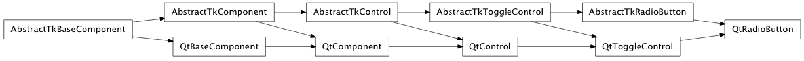

Bases: enaml.widgets.toggle_control.ToggleControl
A radio button widget derived from IToggleElement
Use a radio button to toggle the value of a boolean field. For a group of radio buttons with the same widget parent, only one radio button may be selected at a time. This makes groups of radio buttons useful for selecting amongst a discrete set of values. For multiple groups of independent radio buttons, place them in their own Container.
See Also
ToggleControl
Overridden parent class trait

Bases: enaml.widgets.qt.qt_toggle_control.QtToggleControl, enaml.widgets.radio_button.AbstractTkRadioButton
A Qt implementation of RadioButton.
Creates the underlying Qt widget.
Binds the event handlers for the radio button.

Bases: enaml.widgets.wx.wx_toggle_control.WXToggleControl, enaml.widgets.radio_button.AbstractTkRadioButton
A wxPython implementation of RadioButton.
WXRadioButton uses a custom wx.RadioButton control. Radio buttons with the same parent will be mutually exclusive. For independent groups, place them in their own parent compoenent.
Creates the underlying custom wx.RadioButton control.
Binds the event handlers of the control.
An event handler for toggle events that have nothing to do with mouse interaction by the user and therefore the events emited by _on_toggled would be inappropriate.